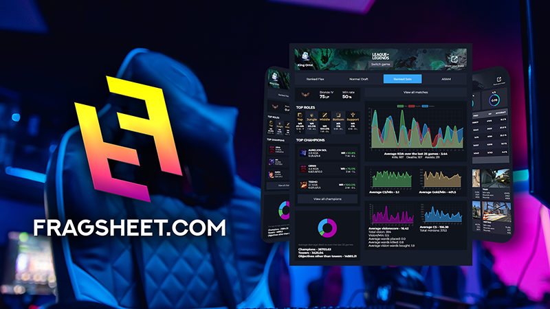

I build systems that don't fail
Handling real financial flows
Working with transaction-critical systems in core banking on IBM z/OS.
What I work on
I work with transaction-critical systems in core banking where financial flows must execute correctly every time.
The constraints are clear: correctness and stability first, with consistent behavior under load.
My scope spans IBM z/OS transaction paths and modern service layers that integrate with legacy infrastructure.
-
Transaction Processing
Engineering transaction-critical financial flows where consistency, traceability and correctness must hold under production pressure.
-
High Availability Systems
Designing and maintaining high-reliability systems in core banking with low tolerance for failure or service interruption.
-
Legacy-Modern Integration
Evolving legacy core systems through modern service layers while preserving reliability in transaction-critical operations.
-
Performance-Critical Systems
Tuning and safeguarding systems under load where response time and operational stability directly affect business-critical flows.
Selected Work
Most production work happens inside proprietary banking platforms. These public examples reflect the same standards: high-reliability delivery, transaction-critical correctness, and stable performance at scale.
-
Instant payments
Infrastructure for Pan-European Payments
Built infrastructure capabilities for instant payment flows in core banking, prioritizing fault tolerance, traceability and deterministic behavior at high transaction volume.
-
Web
AI-Powered Coaching for League of Legends
Owned the API and cloud delivery path for a real-time product workload, with emphasis on stable interfaces, secure auth flows and dependable releases under fast iteration.

-
Application Integration
Maintaining and Extending Legacy Systems in Assembler
Maintained and extended HLASM production paths in core banking, covering transaction-level fixes, IMS diagnostics and carefully controlled change delivery in live environments.
-
Mainframe
Building and Sustaining High-Traffic Systems
Developed and sustained COBOL batch and online programs on IBM z/OS for daily banking load, balancing data integrity, throughput efficiency and long-term operational stability.
Contact
Open to conversations about transaction-critical engineering, core banking systems and roles where reliability and correctness are business-critical.
Best reached via LinkedIn, or send a message directly through the form.